12 Best Ways to Protect Yourself from COVID-19 Coronavirus Infection
1.Maintain Your Distance
It is difficult to identify who is infected and who isn’t, so avoid close contact with people around you. If someone around you is coughing or sneezing, try to maintain a distance of 1 meter and cover your mouth and eyes.
Since the disease spreads from person to person through the liquid droplets that are sprayed when someone sneezes or coughs, doing this can prevent the virus from entering your body.
2.Seek Medical Care Early
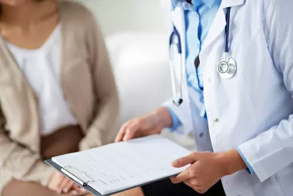
If you or someone you know is showing symptoms like cough, fever, or difficulty breathing, visit a doctor as soon as possible. If you are a senior with a history of pneumonia or have symptoms of pneumonia, you need to be on the watch and report to your doctor for necessary tests.
By doing so, you will protect yourself and also help prevent the spread of the virus.
3.Stay Informed and Updated
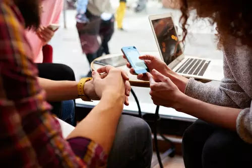
Keep a check on Coronavirus updates in your locality. Avoid parts of the city that have confirmed cases of the disease. Gather information through reliable sources like the World Health Organization (and not WhatsApp videos) about current prevention methods that have been put in place and follow them.
National and local authorities have the most up-to-date information on the situation in your locality.
4.Practice Food Safety
Have separate cutting boards for meat and vegetables and clean them regularly with soap. Wash your hands after handling raw food and before consuming cooked food. Do not eat food from restaurants or stalls that don't have basic hygiene facilities like hand wash or sanitizer.
Only consume meat products that have been thoroughly cooked because the heat kills the germs that may be present.
5. Travel with Caution
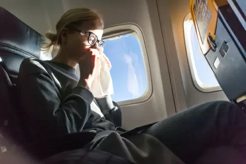
Avoid public transport that is crowded and carry tissues to cover your mouth when you cough or sneeze. Put used tissues only inside dustbins, don’t throw them outside. Avoid travelling altogether if you're showing symptoms like cough, fever, or cold.
Avoid touching your eyes, mouth and nose while you are outside. Wear face masks in crowded regions, don't touch your mask with your hands once you've put it on.
6.Get Your Questions Answered
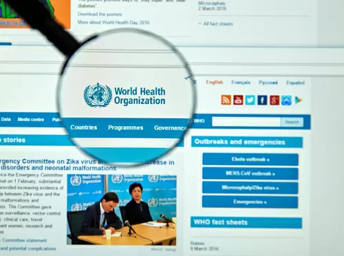
It is understandable if you feel anxious about the outbreak. Get facts from credible sources and take reasonable precautions by accurately determining the risk. The World Health Organization (WHO), your healthcare provider, and your national public health authority are ideal sources of accurate information on COVID-19.
7.WASH YOUR HANDS FREQUENTLY
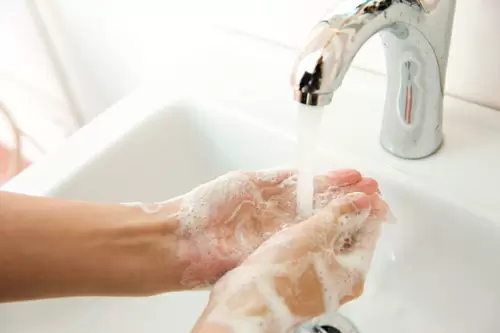
There is no cure for COVID-19 yet. But the best way to counter the disease for now is to wash your hands with soap regularly. Wash hands before eating, after sneezing, or coughing, and after coming in contact with someone who shows symptoms.
Washing your hands properly can help you stay disease-free.
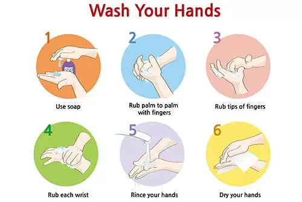
8.Carry A Sanitizer
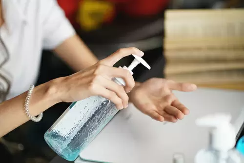
Alcoholic hand rubs or sanitizers are the most convenient hygiene measure you can take. It is an effective and practical way to keep your hands clean in public places without getting your hands wet. Buy sanitizers that contain 60 to 95% alcohol.
9.Use A Facemask
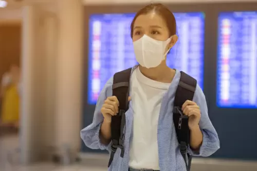
If you live in a region that has reported cases of COVID-19, consider wearing a Facemask before heading out. A face mask gives you basic protection against airborne germs and infections. Especially in crowded places and public transport, a Facemask is a necessary step whether you are showing symptoms or not.
10.Disinfect Your Home
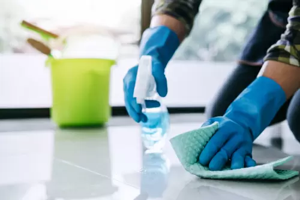
Wash your bedsheets and towels. Wipe down counters, tabletops, doorknobs, bathroom fixtures, toilets, phones, keyboards, tablets, and bedside tables every 2 days. Keeping your house tidy gives you a safe space from infections.
11.Avoid Pets and Animals
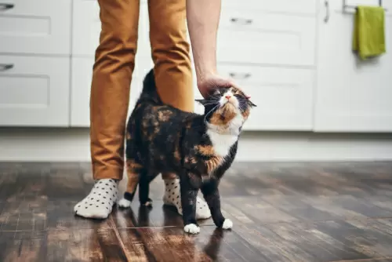
If you have symptoms including coughing, sneezing and fever, avoid contact with pets and other animals. Although there have not been reports of pets or other animals becoming sick with COVID-19, it is important to take precautions.
12.Don't Share Common Household Items
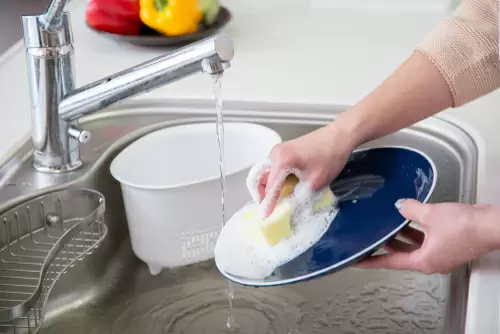
Avoid sharing dishes, drinking glasses, cups, eating utensils, towels, bedding, or other items with family members. If a patient uses these items, wash them thoroughly. By including these simple precautions against COVID-19 in your daily routine, you can reduce the chances of getting infected.